Difficulty bands¶
For a model experiment, start with Prototyping and convergence checks: hold evaluation data fixed, vary one factor, and distinguish robustness from retraining at each difficulty. The bands below combine several factors; they are not an automatic curriculum or measured model-accuracy levels.
There is no difficulty= parameter, no preset constructor and no CLI flag. Difficulty is a property of a combination of knobs rather than of any one of them — a large solid primitive on a noisy canvas is still separable on colour alone, while an eight-pixel glyph beside clutter drawn by the same process is not — so this page maps whole configurations to a suggested band instead of hiding them behind a name.
Everything a band sets is an ordinary SyntheticConfig field. Copy a row, change what you need, and the band label stops applying — which is the intended use, not a misuse.
The three bands¶
| band | what it sets | why it sits there |
|---|---|---|
| easy | NoiseBackground(sigma=12), primitives, size ratio 0.10–0.30 |
noise removes the trivial edge detector, but a large solid-coloured primitive is still separable on colour alone |
| moderate | TextureBackground(frequency=8), primitives, size ratio 0.08–0.25, distractors=3, degrade=(GaussianBlur(0.5), JPEG(75)) |
structure at object scale makes a false positive possible, and the clutter forces classification rather than blob-finding |
| hard | the same canvas and chain, shapes=tuple(LetterShape), size ratio 0.03–0.25, distractors=6 |
the clutter is drawn by the same process as the targets, so it cannot be rejected by "is this a shape"; 0.03 at 256 px is an eight-pixel glyph |
One scene per band, annotated three ways. The objects are held still across the three pictures so the overlays are comparable: the axis-aligned box each detection run exports, the oriented box obb exports for the same object, and the polygon segmentation exports. A seed produces the same scene whatever task is configured, so nothing but the drawn overlay differs between them.
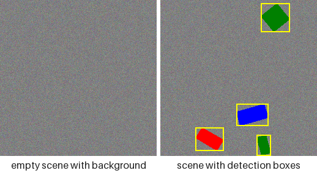
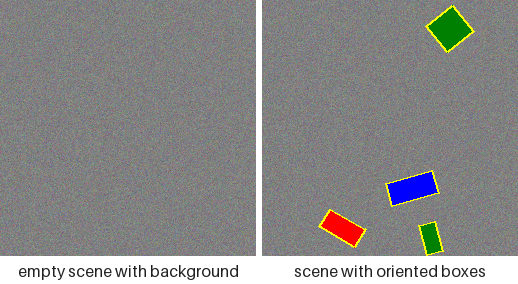
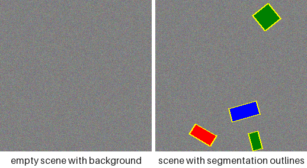
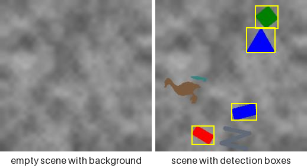
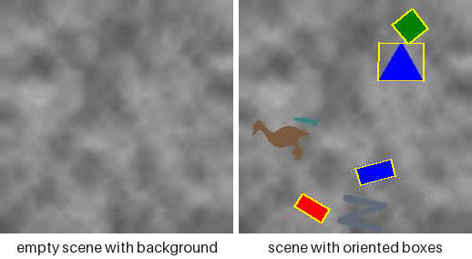
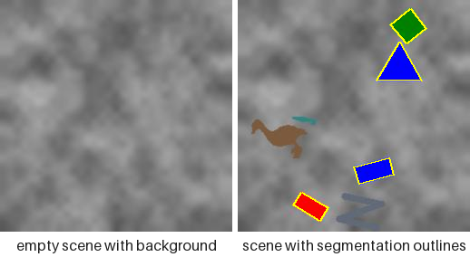
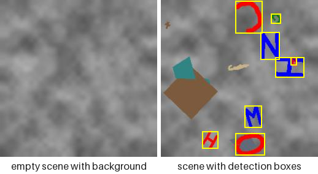
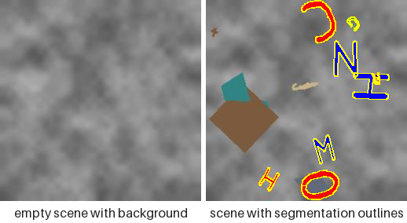
Both halves are rendered at 256 pixels because the bands are size ratios: 0.03 of that canvas is the eight-pixel glyph the hard band is named for, and a band rendered smaller would quietly stop being the band in the table. What the pictures show that the numbers cannot is how little of a hard sample is a labelled object — most of its ink is unlabelled clutter drawn by the same process as the targets, over a canvas whose own structure sits at object scale. The overlays are where the band's cost lands unevenly: an eight-pixel glyph still takes a readable box, while its outline and its rotation are most of a stroke wide and effectively unrecoverable. The keypoints task has no tab here because only the hard band's vocabulary carries landmarks — the tasks page shows it per family. Regenerate them with python examples/render_scene_gallery.py --groups difficulty.
The knobs a band is made of¶
A band is nothing but the fields in its row, and each of those is pictured on its own under Customization and extension. Reading a band as its parts is the fastest way to see which part is costing a model what:
NoiseBackground(sigma=12) for easy, TextureBackground(frequency=8) for the other two. Grain removes the trivial edge detector; structure at object scale is what makes a false positive possible at all.
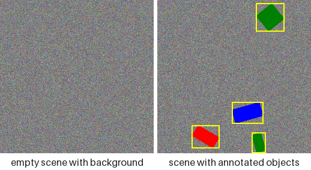
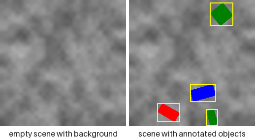
distractors=3 for moderate, distractors=6 for hard. Drawn from the same process as the targets and carrying no annotation, so "is there a shape here" stops being a usable detector — only the boxes separate them.
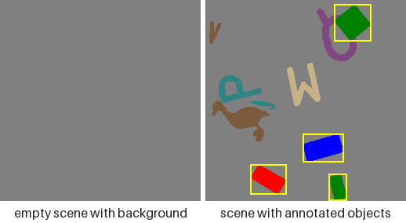
degrade=(GaussianBlur(0.5), JPEG(75)) for moderate and hard. Both are shown here at stronger settings than the bands use, so what they do is visible: blur costs corner keypoints and the OBB angle, JPEG costs thin strokes.
shapes=tuple(LetterShape) is what makes the hard band hard at small sizes: 26 classes whose silhouettes differ by a stroke, rather than four whose silhouettes differ by a corner count. The shape families page pictures every member.

from synth_datasets import (
JPEG,
GaussianBlur,
SyntheticConfig,
TextureBackground,
)
from synth_datasets.families.letters import LetterShape
hard = SyntheticConfig(
img_size=256,
background=TextureBackground(frequency=8.0),
shapes=tuple(LetterShape),
min_size_ratio=0.03,
max_size_ratio=0.25,
min_objects=4,
max_objects=8,
distractors=6,
degrade=(GaussianBlur(radius=0.5), JPEG(quality=75)),
)
print(len(hard.shapes), hard.distractors, len(hard.degrade))
What ranks them¶
The ladder is measured in this repository by a training-free proxy: five deterministic, numpy-only statistics over a fixed seed, run as part of the unit suite (tests/test_unit/test_synth_datasets/_difficulty.py). Measured over eight images per band on a 256-pixel canvas:
| band | mean area px | p10 area px | small fraction | boundary contrast | background SNR | clutter |
|---|---|---|---|---|---|---|
| easy | 1652 | 553 | 0.000 | 44.7 | 7.75 | 0.000 |
| moderate | 1263 | 330 | 0.000 | 37.5 | 3.34 | 0.027 |
| hard | 517 | 30 | 0.298 | 36.9 | 3.20 | 0.041 |
All five axes agree on the ordering, which is not something the table was tuned into — a test asserts it, so a band that stopped being harder than the one below it fails the suite rather than quietly staying on this page. Reading the columns:
- mean / p10 area — labelled-object area in pixels, from the polygon rather than the box. The tenth percentile is what says whether a band reaches the small regime rather than merely averaging lower.
- small fraction — share of objects below COCO's own small-object threshold rescaled to this canvas (
1024 × (256/640)²≈ 164 px). Zero for the two easier bands and roughly three objects in ten for the hard one. - boundary contrast — mean absolute grey step across the object outline, which is what a first-layer edge filter actually straddles.
- background SNR — object-to-background grey separation divided by the background's own spread: how far a fill stands out in units of the noise around it.
- clutter — share of the canvas painted by unlabelled distractors, measured on an undegraded twin of the same seed, since a blurred or compressed fill no longer matches the palette exactly.
Regenerate the table from the code that produced it rather than editing it by hand:
python -c "from tests.test_unit.test_synth_datasets._difficulty import render_table; print(render_table())"
What this does not claim¶
Two limits worth stating outright, because a proxy is easy to over-read:
- It does not rank architectures on real images. A knob that costs 0.05 mAP on drawn shapes may cost nothing, or everything, on photographs.
- It measures the pipeline's sensitivity to each nuisance, which is what a regression gate needs, and nothing about absolute detectability.
A held-out mAP table over these bands remains desirable and belongs downstream in lucid_yolo, which already has the training loop and the held-out gate — this package is referenced from its tests and has no training code of its own. ultralytics is neither a dependency nor an extra here, and reimplementing a training loop inside a data generator to measure that generator would be the wrong place for it. The follow-up is therefore filed against that gate rather than against this repository.